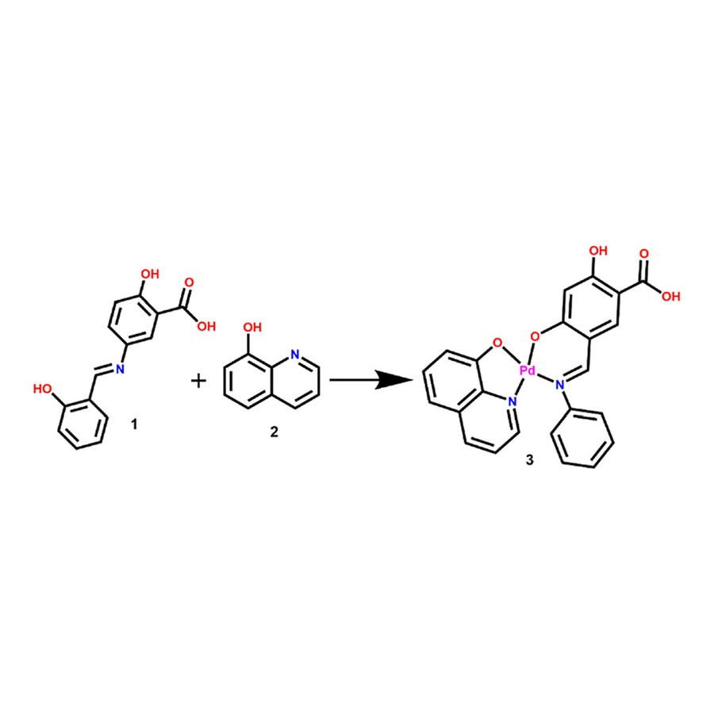
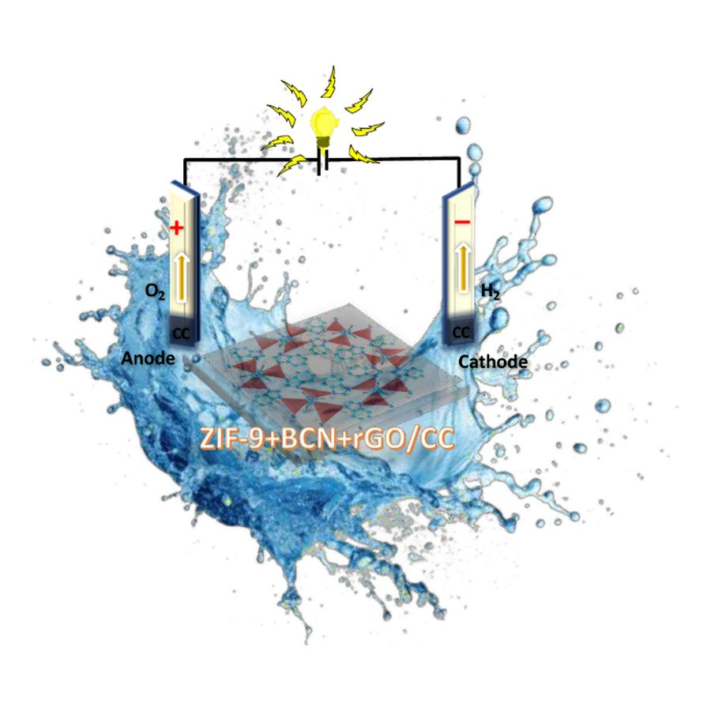
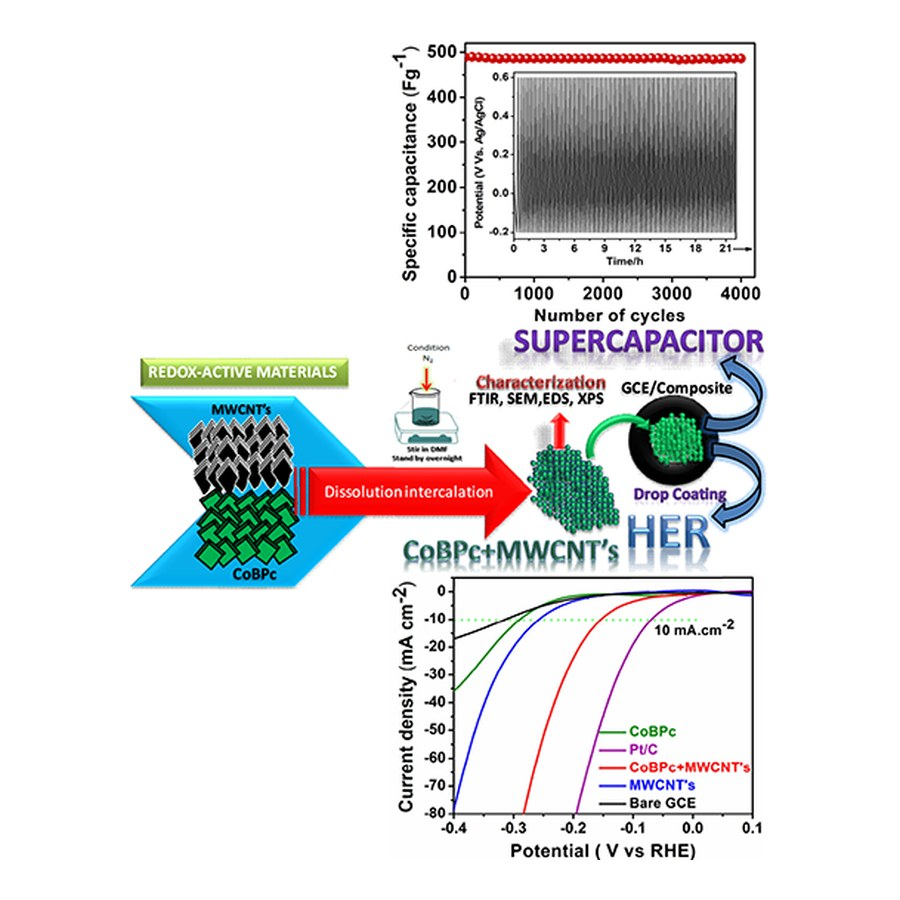
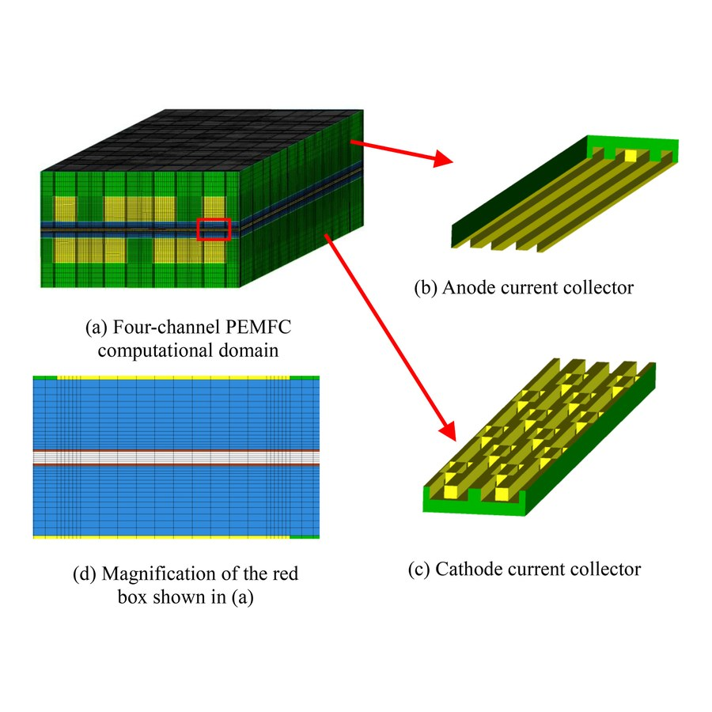
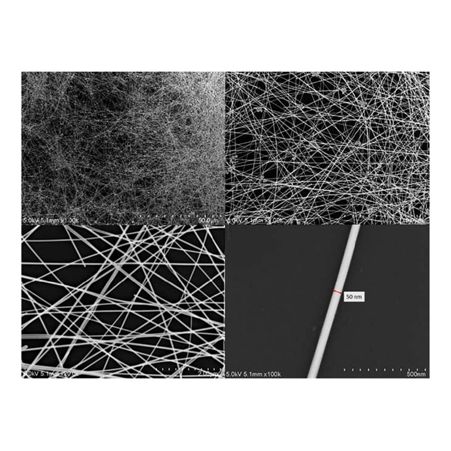
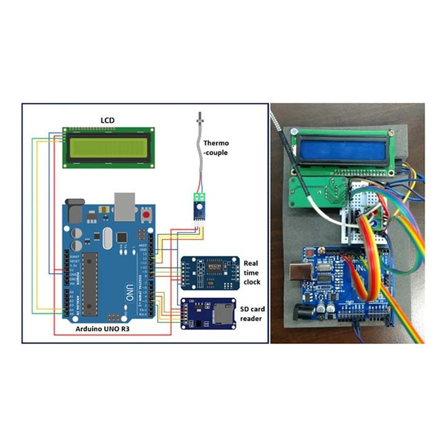
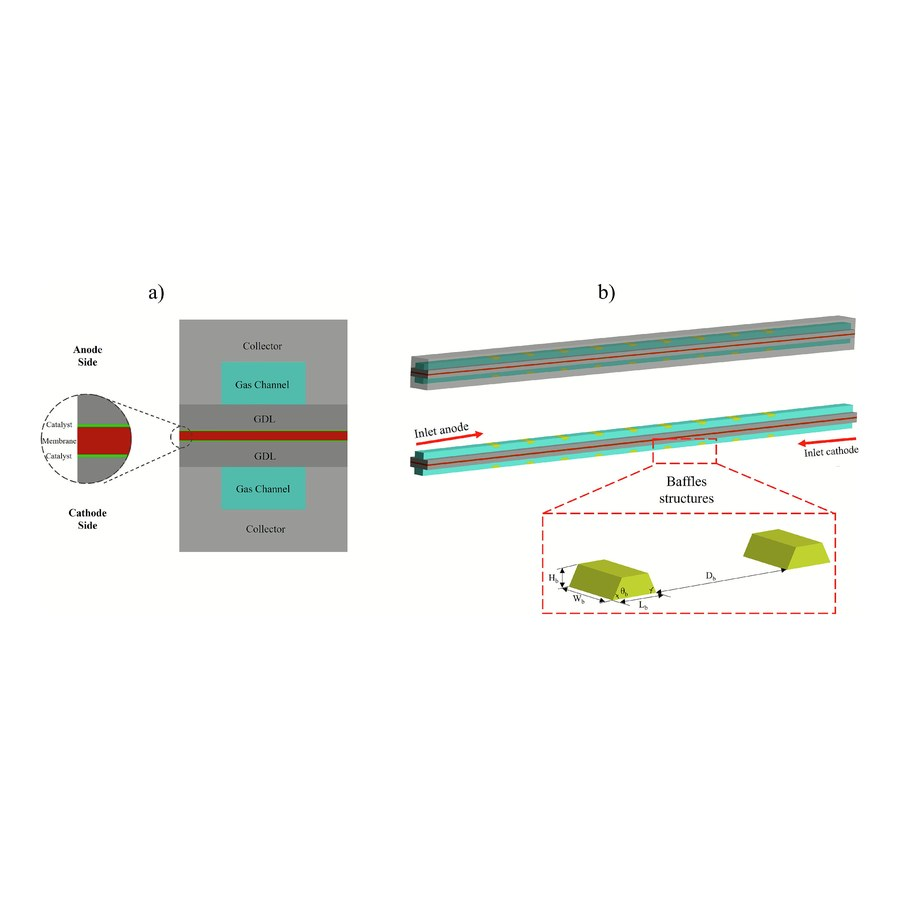
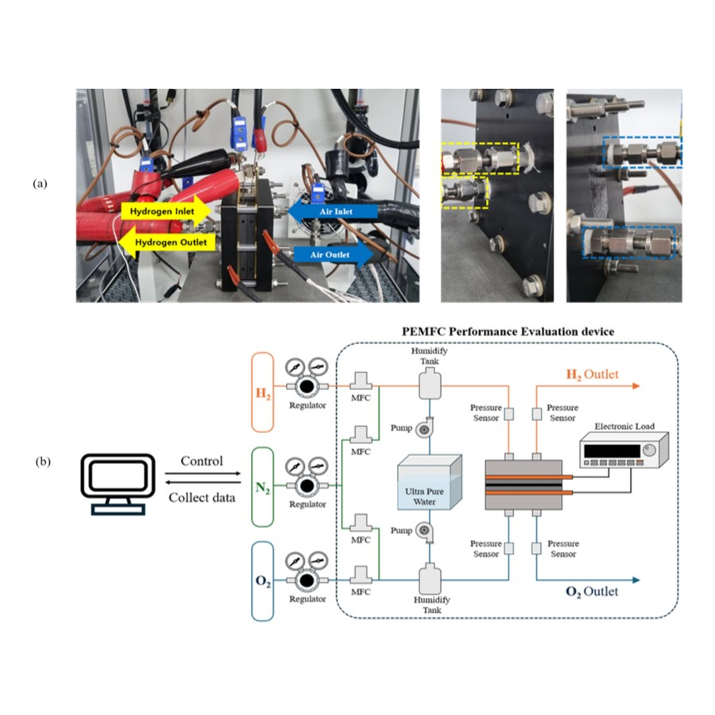

Metal Complexes & Nanomaterials
Synthesis and characterization of metal complexes, MOF materials, metal oxides/nanoparticles, and 1D/2D/3D materials.
Figure: Ni/Pd phthalocyanine synthesis, Daniel & Kim, Catal. Sci. Technol. 2025

Electrocatalysis & Sensing
Electrochemical sensing and electrocatalytic HER, OER, ORR, and PEM fuel cell applications.
Figure: ZIF-9+BCN+rGO/CC electrocatalyst, Daniel et al., Langmuir 2025

Supercapacitors & Batteries
Energy storage device research spanning supercapacitors and batteries.
Figure: CoBPc-MWCNT composite, Daniel et al., Energy & Fuels 2026

3D-Printed Bipolar Plates
Fuel cell bipolar plates fabricated by 3D printer.
Figure: four-channel PEMFC current collectors, Nguyen & Kim, Renewable Energy 2024

Nanowire Synthesis & Patterning
Nanowire synthesis, patterning, and laser processing.
Figure: AgNW random network SEM, Vuong et al., Nanotechnology 2024

Electronic Device Fabrication
Fabrication of flexible and functional electronic devices.
Figure: AgNW transparent heater test rig, Vuong et al., Nanotechnology 2024

Precision & Additive Manufacturing
CAD/CAM systems, precision machining, and additive manufacturing (3D printing).
Figure: micro-channel baffle geometry, Le et al., Fuel 2026

Intelligent Manufacturing Systems
Machine vision, smart monitoring, and AI-driven manufacturing. Try our live PEMFC PINN demo →
Figure: PEMFC test bench & ML pipeline, Ngo et al., J. Ind. Eng. Chem. 2025